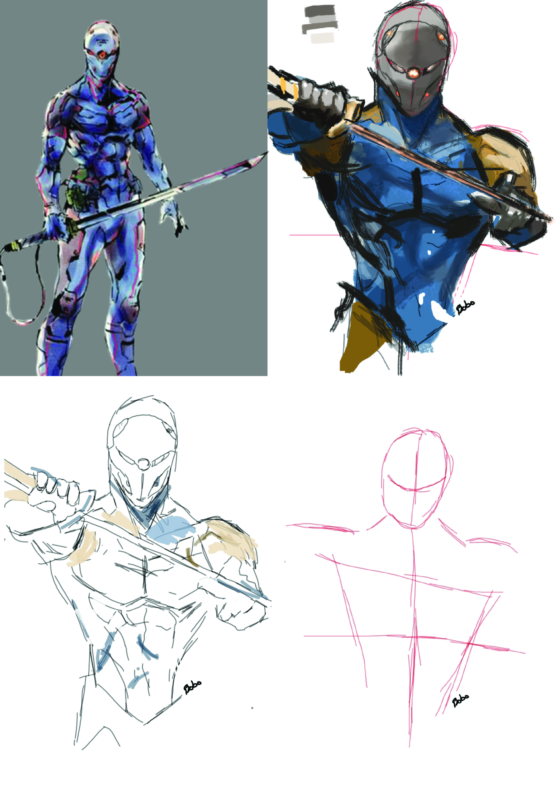
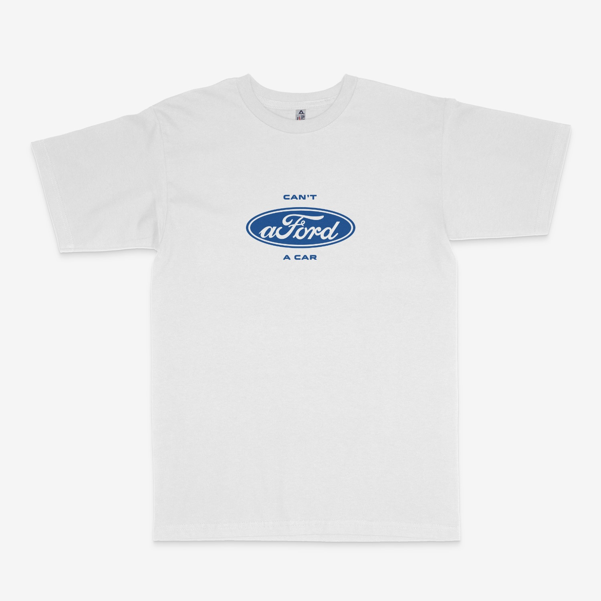
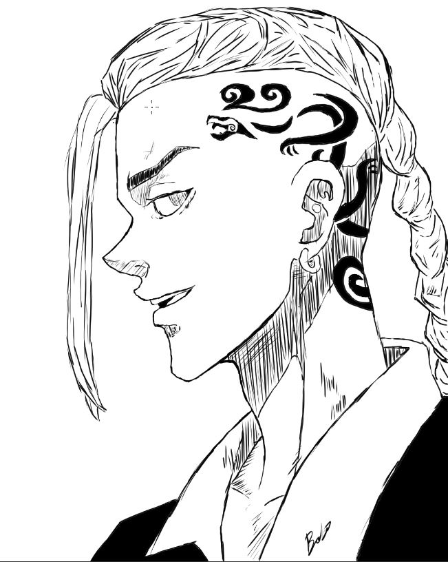
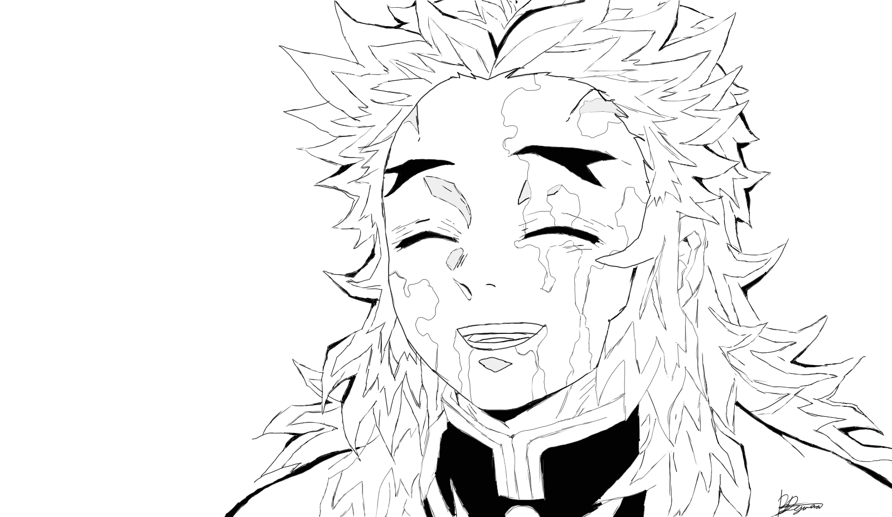
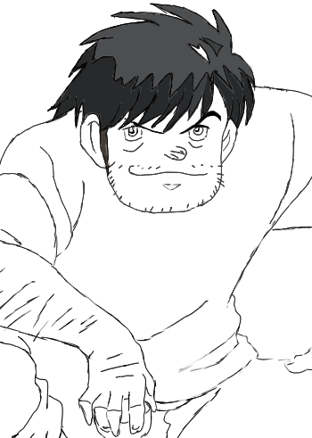
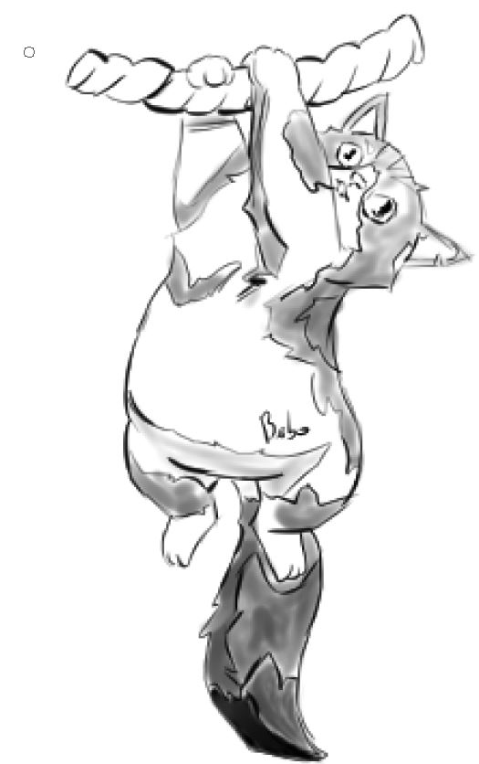

Inspect
Inspect
01 · Pencil to Digital
Skateboarder & Cat — Color Study
Traditional graphite character sketch translated into warm rim-lit digital painting.
03 / Illustration & Ideation
Graphite construction drawings on paper translated into digital color studies, ink linework portraits, multi-stage character sheets, and vector apparel mockups.
Select any piece to inspect full resolution in the lightbox.
Inspect
Traditional graphite character sketch translated into warm rim-lit digital painting.

InspectStep-by-step progression from red gesture construction lines to painted form.

InspectCustom vector lettering and automotive emblem parody applied to apparel.

InspectMonochrome line weight exploration and cross-hatching shading.

InspectLayered hair rhythm and facial expression contour drawing.

InspectLoose digital study focusing on posture, perspective, and graphic value blocks.

InspectQuick character gesture exercise in soft monochrome brushwork.